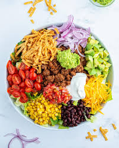

Taco Salad
Home

Description
This is a quick-to-throw-together taco salad that even picky family members will eat, as you can serve any of the ingredients on the side.
I sometimes serve with taco shells and let my five-year-old make tacos out of the ingredients (minus the dressing for the salad).
Serve salad with tortilla chips, avocado, cilantro, and Cheddar cheese to taste. Yum!
Ingredients
- 1 pound lean ground beef
- 1 (1 ounce) packet taco seasoning mix
- 1 head romaine lettuce, chopped
- 1 (15 ounce) can kidney beans, rinsed and drained
- 1 (10 ounce) basket grape tomatoes, chopped
- 1 avocado, pitted and sliced
- ½ cup chopped carrots, or to taste
- ½ cup chopped green bell pepper, or to taste
- ½ cup chopped celery, or to taste
- ¼ cup shredded Cheddar cheese, or to taste (Optional)
- ¼ cup lime juice
- 3 tablespoons honey
- 2 tablespoons champagne vinegar
- 2 tablespoons chopped fresh cilantro, or to taste (Optional)
- 2 tablespoons Dijon mustard
- 3 cloves garlic, minced
- salt and ground black pepper to taste
Steps
- Heat a large skillet over medium-high heat. Cook and stir beef in the hot skillet until browned and crumbly, 5 to 7 minutes; drain and discard grease.
Add water and taco seasoning mix; cook and stir until water is evaporated and beef is evenly coated in seasoning mix, about 5 minutes.
- Mix romaine lettuce, kidney beans, tomatoes, avocado, carrots, green bell pepper, celery, and Cheddar cheese in a large bowl; top with ground beef.
- Whisk lime juice, honey, vinegar, cilantro, mustard, garlic, salt, and pepper together in a bowl until dressing is well mixed; served alongside salad.